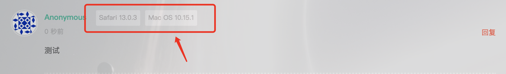

Hexo博客DIY（4）在线聊天和文章评论
Hexo博客DIY（4）在线聊天和文章评论
1. DaoVoice免登陆聊天功能
在我博客的右下角有一个悬浮聊天窗，点击即可直接发起会话，当我不在线时，后台会将消息发送到我的邮箱，这是基于 DaoVoice 的实现方案。
开启 DaoVoice 也比较简单，首先去官网注册一个账号然后登录，进入控制台，点击左侧“应用设置”，并在子菜单选择“安装到网站”：

在图里中间那个红框处标记了一个 app_id，把它记下来，接着到主题配置文件中，随表找一个地方顶格添加以下配置：
1 | # Daovoice |
daovoice_app_id 就填写刚才控制台获得的那个。接下来，将图中上下两个红框那里的代码整体复制下来，找到并打开 next/layout/_partials/head/head.swig，在里面随便找一个顶格的空位粘贴进去，不过需要修改一点，在外层加一个 if 判断是否开启，然后在 app_id 处将固定的你的 id 改为从配置文件中读取，这样以后想要临时关闭 DaoVoice 时只需要把配置文件中 DaoVoice 的 enable 设置为 false 即可，更换了 DaoVoice 账号也只需要更新一下配置文件中 DaoVoice 的 app_id 即可。也可以直接复制我下面的代码：
1 | {% if theme.daovoice.enable %} |
配置完成后，在 DaoVoice 控制台的 应用设置 - 聊天设置 中可以自定义欢迎语以及按钮的位置、颜色等。
2. Gitalk评论
文章评论也有多种方案，Disqus、友言、畅言、Valine（基于 Leancloud）、Gitment、Gitalk 等，不过 Disqus 是韩国的，虽说国内是能有的不过有时候还是会莫名其妙像被墙起来了一样，友言和畅言已经停止维护，最新版的 Next 也把 Gitment 移除支持了，不过 Gitalk 和 Gitment 比较类似，都是基于 GitHub 的 Issue 实现的，我个人认为，使用 GitHub 托管的博客，使用 GitHub 自己的 Issue 服务来实现也相当契合，何况 GitHub 不仅免费的已经相当够用，而且还没有流量限制。
Next 主题本身是支持 Gitalk 的，所以引入 Gitalk 只需要像 LeanCloud 和 DaoVoice 一样申请一个 app_id 即可。而由于 Gitalk 本身是基于 GitHub 实现的，所以我们甚至都不需要再另行注册一个账号！
首先在 GitHub 新建一个仓库，用于存储评论的 Issue，当然如果你愿意也可以直接使用博客的仓库。然后在 GitHub 的设置里面，进入最下面的 Developer settings，然后再选择 OAuth Apps，然后点击右上角 “New OAuth App” 新建一个应用：

在接下来的界面里，输入应用名和博客地址：

注意：博客地址是你访问时的真实地址，也就是进入自己的博客首页之后地址栏里的 URL，需要带上 http（或 https，根据自己的实际情况），如果购买绑定了自定义域名，需要填写自定义域名。
比如，我的博客绑定了域名为：www.liushulun.cn，由于我开启了强制 HTTPS，因此这里两个需要填写地址的地方，我都需要输入：https://www.liushulun.cn。
新建好了应用后，在应用信息界面就能找到 client_id 和 client_secret：

复制下来，然后在主题配置文件中找到 Gitalk 相关的配置部分：
1 | # Gitalk |
enable: 是否打开 Gitalk 评论功能github_id: 刚才申请 OAuth App 时所用的 GitHub 用户名，注意是用户名而不是地址，用来验证 OAuth App 密钥repo: 刚才新建的（或是已有的）用于保存评论 Issue 的仓库名，注意是仓库名而不是地址，用于指定评论保存在哪个仓库内client_id: 新建的 OAuth App 里面的 client_id 复制过来client_secret: 新建的 OAuth App 里面的 client_secret 复制过来admin_user: 这里填你自己的 GitHub 用户名（不是地址），默认情况下新发表的文章 Gitalk 评论是未初始化的状态，需要这里指定的 GitHub 用户才能初始化开启per_page: 评论列表一页显示几条评论
由于是基于 GitHub Issue 的实现，Gitalk 评论支持使用 MarkDown 格式，交流代码会方便很多。不过缺点就是，任何人想要评论则必须使用 GitHub 账号登陆才行。
3. Valine评论
3.1 开启Valine
Gitalk 评论虽然最符合程序员的喜好，毕竟基于 GitHub 的 Issue，可以自由改动、打 Tag等，但是缺点就是必须登录 GitHub 账号，有时候有些小问题就显得麻烦了，后来发现 LeanCloud 除了可以实现文章阅读统计外，还支持 Valine 评论功能，最关键的是免登陆，而且免费（目前）！于是我的博客最终选择了 Valine 作为评论引擎。
首先 Valine 评论和 LeanCloud 阅读统计同时开启会有冲突（2019-12-04 无意间发现已经不会冲突了），解决方案是关掉 LeanCloud 独立的阅读统计，并在 Valine 设置项中开启统计功能即可，Valine 相关设置如下：
1 | # Valine |
appid、appkey 的设置可以参照系列第三篇中 LeanCloud 阅读统计部分：《访客与阅读量统计》，其他各个字段的含义在 Valine 官网配置详解（点此直达）中都有说明了，很详细。
但是当开启了 Valine 并部署后，会发现评论处只支持用户输入昵称评论，不能自己输入邮箱、网址等等，效果如下：
而官网提供的评论框可以同时输入昵称、邮箱、链接：
这样当需要使用邮件沟通时，就比较麻烦了。后来通过查看官网的配置信息，以及查看了 Next 主题源码之后发现，原来是 Next 源码直接限制了只能输入昵称，找到 next/layout/_third-party/comments/valine.swig，可以发现源码里面有这么一段：
1 | <script> |
重点：
1 | guest_info:['nick'] , //评论者只需要提供评论的昵称即可 |
也就是这里写死了只能输入昵称，其实作者的本意应该是，怕游客以为要全部输入才能评论，所以只开放一个昵称栏，这里到底是否需要设置其他信息可以自行决定，我是为了方便起见使用了昵称 + 邮箱的方式，首先看到 主题配置文件 next/_config.yml 中 Valine 的设置部分有这么个属性：
1 | guest_info: nick,mail,link # custom comment header |
这个属性对应在源码 next/layout/_third-party/comments/valine.swig 中传递给了：
1 | var guest = '{{ theme.valine.guest_info }}'; |
这段代码的作用也就是从主体配置文件中获取 guest_info 属性，然后以 ‘,’ 分隔开，再从 ['nick', 'mail', 'link'] 中分别获取对应的字符串并组成数组，然后传给 meta。查看 Valine 官网资料可知，这个 meta 属性是 LeanCloud 存储评论的头部信息，方案 ① 就是输入框直接使用相同的属性：
1 | guest_info: guest, |
但是可能我希望所有的评论，在存储到 LeanCloud 中时都带有全部 3 个属性，但用户评论时只可以输入 1 或 2 个信息（比如我），总之就是用户可以输入的信息和 LeanCloud 存储的信息不一致，那么就需要自定义一个属性了。
首先在主题配置文件 next/_config.yml 的 Valine 设置部分添加一个自定义属性（命名可自定义）：
1 | # Valine |
重点：
1 | guest_header: nick,mail # 用户可以自定义输入的信息 |
然后在 Next 的 Valine 部署源码 next/layout/_third-party/comments/valine.swig 中修改这一部分：
1 | var GUEST = ['nick', 'mail', 'link']; |
主要就是获取主题配置文件中设置的 guest_header 然后组合成数组再传给 guest_info 即可。重新部署，效果如下：
3.2 隐藏Valine系统信息
常规配置好 Valine 后，会发现评论时自动读取了用户的系统信息等，不仅不美观而且暴露隐私，非常不友好：

想要隐藏系统信息可修改 next/source/css/_custom/custom.styl，在末尾添加如下代码：
1 | // Valine 隐藏系统信息 |
注：custom.styl 这个文件会在 next/source/css/main.styl 中被引入：
1 | // Custom Layer |
隐藏后的效果：

3.3 文末增加留言区跳转
附加一个小记录，当文章未开启评论功能时，在文首显示一条跳转留言区的功能。我个人是放在了文章最底部，和有评论时的位置相同，并且复用了博客首页文章列表底下的“页码导航栏”的样式，直接放进一个链接即可：
1 | {% macro render(post, is_index, post_extra_class) %} |
效果如下：

4. 二级标题替换为留言链接
Next 主题的博客二级标题其实就是正标题下面的这一小段文字：

但是像我的博客其实并没有二级标题的必要，所以如图所示设置的和博客描述是一样的。但是这个标题区作为一个信息展示栏可以起到置顶的作用，根据我的个人需求，将二级标题改成了“留言区”的引导链接。
首先需要注意的地方是，通常为了使得博客能被搜索到，都会在主题配置文件 next/_config.yml 中开启 SEO：
1 | # Change headers hierarchy on site-subtitle (will be main site description) and on all post / page titles for better SEO-optimization. |
因此这个二级标题还是不要直接删掉的好，可以通过让它在网页上不显示，而在页面元素中依然存在的方式巧妙地隐藏掉。在 /next/layout/_partials/header/brand.swig 中找到二级标题相关部分的源码：
1 | {% if subtitle %} |
把其中的 <h1> 标签和 <p> 标签使用的样式 site-subtitle 替换掉，改为：
1 | {% if subtitle %} |
也就是改成透明，且去掉四周边距，这样在网页上就不会显示了，但实际上在页面元素中还是存在的，这样就不会影响 SEO 了：

然后仿照二级标题的方式，首先在博客站点配置文件 blog/_config.yml 中增加两个字段：
1 | # Custom Subtitle |
这里具体显示名称和链接地址以自定义的为准。然后再在 next/source/css/_common/components/header/site-meta.styl 中增加一个 CSS 样式：
1 | .site-titleContact { |
当然，这里的样式也可以随意根据自己的喜好调整。其中 subtitle-font-size 和 subtitle-color 都是原本二级标题已经定义好的变量，可以直接用。
最后在 /next/layout/_partials/header/brand.swig 中增加一条链接，使用上面定义的样式和数据：
1 | <div class="custom-logo-site-title"> |
放的位置以自定义为准。重新部署即可看到效果：

到这一步其实基本效果已经实现了，但是还有个问题：页面上的其他元素都有个加载进来的动画效果，而这个自定义的 site-titleContact 会导致刚打开页面就显示“留 言”，而其他元素过一会才显示，显得不和谐，因此需要为这个自定义的 CSS 样式添加一个动画效果。首先在 next/source/css/_common/components/header/site-meta.styl 中找到最下面 use-motion 部分，这里定义的是需要动画的元素的初始状态。默认的动画是顶部间距从 -10 渐进到 0，如果想用默认动画，则只需要把 site-titleContact 加到列表中：
1 | .use-motion { |
由于我这个链接是从 -5 渐进到 5，因此需要单独设置：
1 | .use-motion { |
然后找到动画脚本文件 next/source/js/motion.js，先在本地变量定义区定义好这个 CSS 样式：
1 | NexT.motion.middleWares = { |
然后实现动画效果（为了表示层级关系，保留几个方法，但省略了内部源码）：
1 | NexT.motion.middleWares = { |
再次部署，动画效果已经加上了，一切和谐。
更多进一步的个性化欢迎参考：博客 DIY 系列